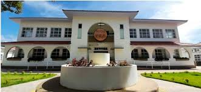

A abordagem pedagógica do Barão de Mauá é pautada na inovação. A instituição busca constantemente atualizar métodos de ensino, incorporando tecnologia e práticas educacionais contemporâneas. Essa abordagem prepara os estudantes para enfrentar os desafios dinâmicos de um mundo em constante evolução.
Outro fator importante é o comprometimento com a formação integral do aluno. O Barão de Mauá não apenas valoriza o desempenho acadêmico, mas também incentiva a participação em atividades esportivas, artísticas e sociais. Essa abordagem visa desenvolver habilidades interpessoais, ética e cidadania, formando não apenas alunos capacitados, mas também cidadãos conscientes e engajados.
Em resumo, estudar no Colégio Barão de Mauá é uma escolha que combina tradição, qualidade acadêmica, infraestrutura moderna, inovação educacional e um compromisso com a formação integral. Esses motivos convergem para tornar o Barão de Mauá uma instituição de ensino que não apenas prepara os estudantes para os desafios educacionais imediatos, mas também os equipa com as habilidades e valores necessários para um futuro de sucesso.
Considerações Finais: Barão de Mauá, Mais que uma Escola, um Compromisso com o Futuro
Optar pelo Colégio Barão de Mauá é escolher uma educação enraizada na tradição, excelência acadêmica e inovação. A sólida base acadêmica, o corpo docente dedicado e a infraestrutura moderna definem uma experiência educacional de qualidade.
A instituição não apenas acompanha as tendências atuais, mas as antecipa, adotando tecnologia e métodos inovadores. Além disso, a abordagem integral, incentivando não apenas o desempenho acadêmico, mas também o desenvolvimento pessoal e social, destaca o compromisso do Barão de Mauá com a formação completa dos estudantes.
Ao escolher o Barão de Mauá, os alunos não apenas recebem uma educação; ingressam em uma comunidade que se compromete com a excelência, preparando-os não apenas para os desafios acadêmicos, mas para a vida. A decisão de estudar aqui é um investimento não apenas no presente, mas em um futuro de sucesso e realizações.